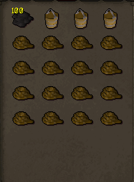

Fishing Trawler Guide
Fishing Trawler is a Fishing minigame run by Murphy that you can access at Port Khazard. A minimum level of 15 fishing is required to play the game. Players board a trawler boat and try to prevent the boat from sinking as they are in the middle of the sea.
Inventory Setup

100 - 200 swamp paste
3-4 bailing buckets
12-16 ropes
Playing The Game
When you first start the game you'll be prompted with a brief tutorial telling you what each item does. You should plug leaks as fast as possible as the boat can fill with water very quickly. Occasionally, the net will rip. Go on the top deck and inspect the net in order to repair it. If your net is good and all leaks are already plugged, spam click you bailing buckets to remove the water as fast as possible.
Rewards Our fishing trawler has all the authentic rewards including :
- Raw Shrimp
- Raw Sardine
- Raw Anchovie
- Raw Lobster
- Raw Manta Ray
- Raw Sea Turtle
- Raw Sharks
- Various Junk Items
However, somewhat inauthentic items were added too to make this minigame worth doing. So, all the above fish can be caught at any level.
- Loop half of key
- Tooth half of key
- Caskets
- Pirate's Hat ( Very Rare )
- Lucky Cutlass ( Very Rare )
Experience
The experience is a tad tweaked to make this minigame more worth doing. The exact formula for experience gained at x1 is ((1.5% of Fishing Level) * Fishing Level) * Number of Fish Caught What this generally works out to mean is that at level 99, you get roughly 20k experience per trip at x1 xp at level 99, and 438.75 xp per trip at x1 at level 15. These are both based on catching around 130 fish, which is the expected average when soloing.
Playing with others
Playing with more players is more relaxed but you get less fish and xp, as the haul is divided evenly between all players.
Note: If you see something not on this page that currently is in-game please let Summer know.